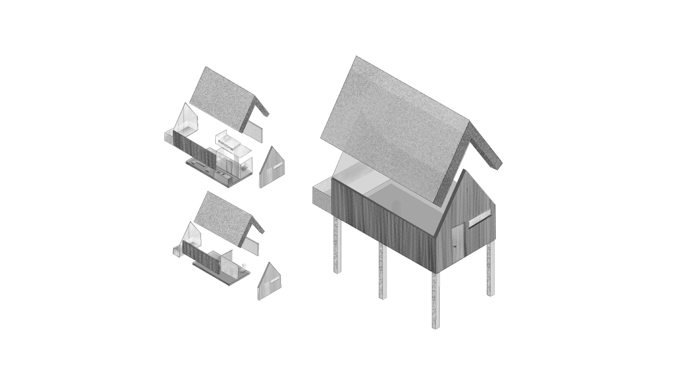
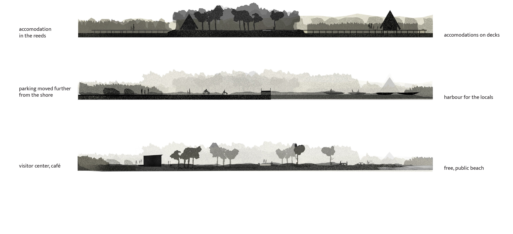

During the design process, we kept in mind the preservation of the natural values of the Fertő-Hanság National Park and the culture of the surrounding region. The delicate balance that has developed between people and the landscape in this area is completely disrupted by the current development, which was pressured by the government and went against environmen- tal-protection laws. The aim of our design is to restore this balance. The planned investment has received significant media attention, and there is concern that once the waterfront is opened, more people will wish to travel here. Nevertheless, we designed for low traffic, as this is a protected natural area where humans are merely visitors, and the preservation of natural values is the priority. We placed more dispersed, smaller-scale buildings along the new shoreline, which fit into the landscape far better than a single large accommodation building would. Made in collaboration with Ágnes Szabó, Lőrinc Imre Nagy
REVITALIZATION AT NEUSIEDLER SEE

